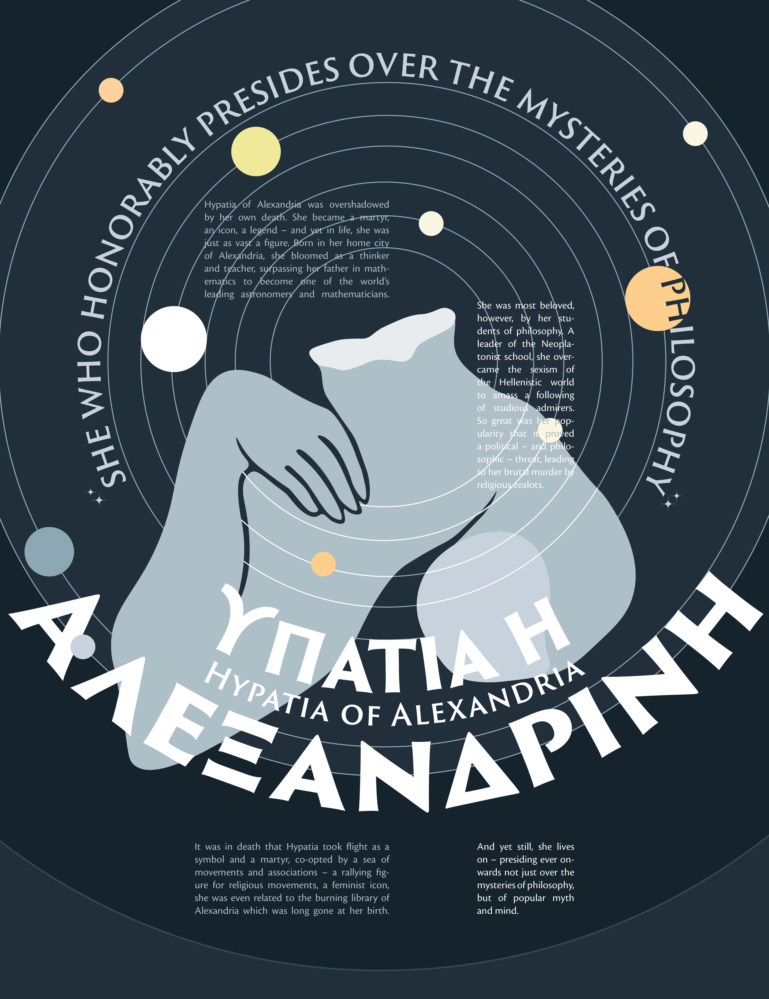

Hypatia of Alexandria:
Biographical Poster
Home
Back
Next
In representing the life and legend of Hypatia of Alexandria, I aimed to emphasize her larger-than-life image through history, and how perhaps her iconicity that's been co-opted by movements throughout the years has overshadowed her own life. I chose a marble, faceless representation of her to speak to this iconic historical status that lacks personal detail. Orbits and planets speak to her life as an astronomer, mathematician, and philosopher.


© Sasha Kostenko 2022. Created by Sasha Kostenko. sasha.kostenko@wustl.edu